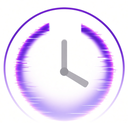

Know who just went live, and who's been at it all day, at a glance.
A small timer appears on every live thumbnail, across all of Twitch.
Click the puzzle piece 🧩 next to your address bar, then the pin beside Uptime Badges for Twitch. The icon holds all the settings: turn colors on or off, set your own time ranges, resize the badge, or move it to any corner.
A one-time standard Twitch login, needed because Twitch's API requires it to answer "who's live and since when". Your login stays in your browser. No tracking, no data collection, nothing sent anywhere else.
⚠ Badges stay hidden until this is done. One click, ten seconds.
Connected! You're all set.
Open TwitchOpen your Following page or anywhere else on Twitch. Badges appear within a few seconds and update live.
Your access token is stored only in this browser and can be revoked any time from your Twitch account's Connections settings.
Not affiliated with Twitch Interactive, Inc.